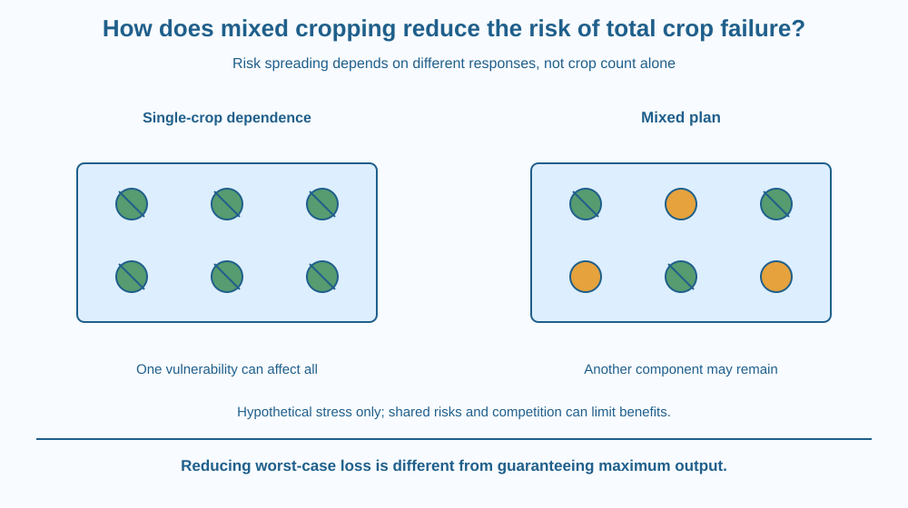

Explain how growing more than one crop can spread the risk of a complete production failure. Distinguish mixed cropping, crop-specific vulnerabilities and competition. Evaluate a risk strategy without promising that any mixture always outperforms every single crop.
A farmer planting one crop may gain a strong harvest when conditions favour it, yet face a large loss when a particular stress affects that crop severely. A field with another suitable crop may retain some useful production under the same event.
Does this mean adding any second crop always improves the outcome? No. The crops can compete, share vulnerabilities or be difficult to manage together. A risk strategy depends on how their responses differ and how the system is arranged.
The useful question is not simply how many crop names appear in the field.
Mixed cropping generally means growing two or more crops together in the same area without the distinct row arrangement emphasised in intercropping. Practical systems vary, but the common risk idea is to avoid depending entirely on one crop response.
Different crops can have different sensitivities to weather, pests, disease and management conditions. If a particular event affects one much more strongly than the other, their combined production may avoid the worst complete-loss outcome.
The key is imperfectly shared risk. Two crops with nearly identical vulnerability to the event may fail together. Counting them as two species does not automatically create a useful buffer against that particular stress.
A diversified system can therefore change the distribution of possible outcomes rather than simply maximise the best-case harvest. A farmer may accept a different expected output in exchange for less exposure to total failure. The appropriate judgement depends on the goal and actual evidence.
Crops also compete for resources. Their growth patterns, timing and management needs must be considered. A poor mixture can reduce performance of both components or make harvest and sorting more difficult.
A useful design may exploit differences in resource use or growth timing, but this lesson does not repeat nitrogen fixation or a natural food-chain mechanism. The core question is how differing vulnerabilities spread agricultural production risk.
Comparisons should use the same area and clearly stated conditions. Comparing the output of a large mixed plot with a small single-crop plot confuses scale with strategy. Units and the definition of useful output also matter when the crops produce different products.
A single season cannot establish a universal rule about risk. Weather and other events vary. Evidence across relevant conditions is needed before claiming a mixture's performance advantage. Our paper examples use hypothetical responses rather than invented real yield statistics.
Draw two weather-event columns and two crop rows. Mark qualitative responses such as affected and less affected. Then compare a one-crop plan with a plan that includes both.
If the rows respond differently, the mixed plan may retain one component during an unfavourable event. If both rows show the same failure pattern, the mixture offers less protection against that event.
Add a competition note between the crops. The diagram should not turn risk spreading into free extra land or resources. A strong model keeps both the potential buffer and the costs visible, so the design can be evaluated rather than advertised as automatically superior.
The SVG shows single-crop and mixed-crop plans under two hypothetical stress conditions. Different crop symbols respond differently in one case, while a shared-stress inset affects both.
A separate arrow identifies competition and management requirements within the mixed plot. The layout is conceptual, not a recommended field spacing or a measured yield comparison.
The caption states that risk reduction is conditional on differing responses and a workable combination. The drawing does not assign a real crop pair an unsupported survival rate or imply that species diversity alone prevents all agricultural loss.

Traditional and modern farming in India includes several multi-crop arrangements. Their purposes can include risk management, resource use and production needs, but the details depend on local crops and practices.
A textbook example should not be copied into an actual field without appropriate agricultural guidance. A pair suitable in one setting may be difficult in another because water, season, variety or harvesting arrangements differ.
A school garden can study the decision on paper. It does not need to expose crops deliberately to drought or pests. Hypothetical scenarios reveal the logic while keeping actual plant care and agricultural recommendations separate.
Use paper and two crop symbols labelled A and B. No seeds or harmful treatment are needed.
Do not use invented numerical yields as though they were field evidence. The model tests whether the risks differ, not whether a named crop is always drought-proof or disease-proof. State what real observations would be needed before making a recommendation.
Why can two different crops still share a severe vulnerability? Consider the event rather than relying only on species identity.
Now imagine a mixture that reduces worst-case loss but lowers the best-case output. Explain why different farmers might value that trade-off differently. The scientifically relevant comparison includes the purpose and range of outcomes, not one preferred season alone.
What risk idea supports mixed cropping?
Answer: C — Different vulnerabilities can reduce dependence on a single crop outcome.
Why can a poorly chosen mixture fail to spread risk?
Answer: A — A common severe stress can affect both components together.
A mixture reduces worst-case loss but not best-case output. What is the soundest judgement?
Answer: B — A range of outcomes and the decision objective matter alongside maximum output.
Create a decision table for a hypothetical mixed-cropping plan. Include crop-specific vulnerabilities, shared stress, resource competition and harvest requirements.
Write one condition under which the plan could spread risk and one under which it might not. Keep the plot area matched. Your conclusion must avoid a universal claim that any two crops beat one and must distinguish a paper scenario from measured agricultural performance.
A strategy can be useful because it limits a bad outcome rather than producing the largest possible good outcome. Risk management is about a range of possibilities. Looking only at the best harvest can therefore miss why a farmer chooses a mixture under uncertain conditions.
Mixed cropping can spread production risk when crops respond differently to stress, but shared vulnerabilities, competition and management determine the actual benefit.